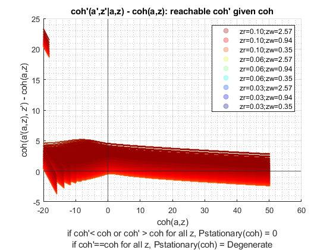
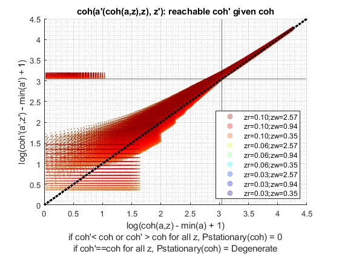
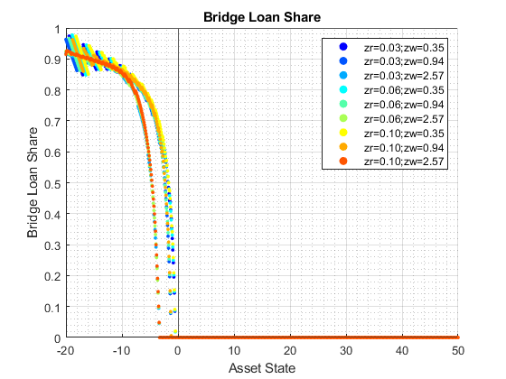
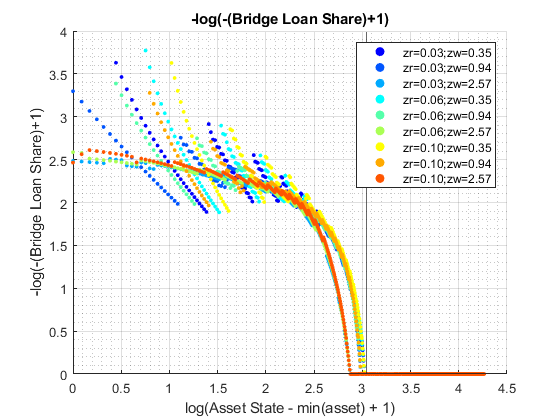
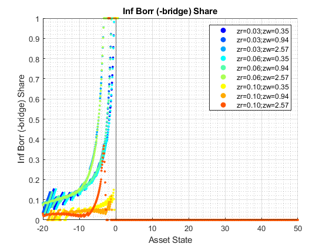
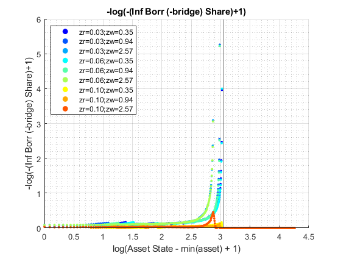
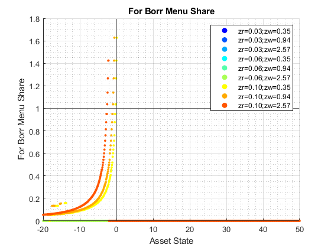
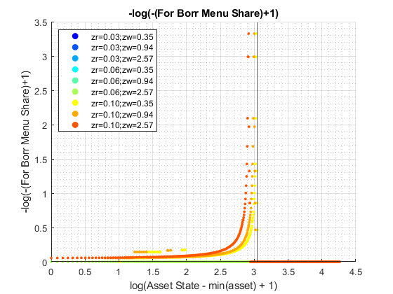
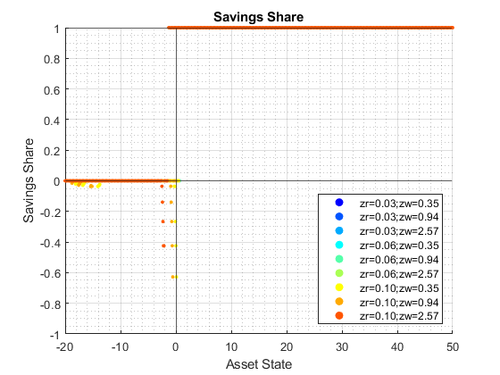
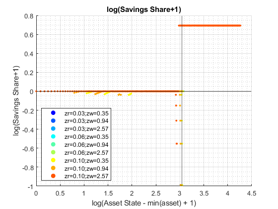

Derive Distributions for For+Inf+Borr+Save+RShock One Asset (Wrapper)
back to Fan's Dynamic Assets Repository Table of Content.
Contents
function [result_map] = ff_abzr_fibs_ds_wrapper(varargin)
FF_abzr_fibs_FIBS_DS_WRAPPER finds the stationary asset distributions
This is a warpper function. Note that abzr and abzr_fibs will not produce the same results even when formal and informal borrowing rates are the same, because they are solved differently, one where asset is principles only, and the other where asset has both principles as well as interest rates.
Default
- it_subset = 5 is basic invoke quick test
- it_subset = 6 is invoke full test
- it_subset = 7 is profiling invoke
- it_subset = 8 is matlab publish
- it_subset = 9 is invoke operational (only final stats) and coh graph
it_param_set = 8; bl_input_override = true; [param_map, support_map] = ffs_abzr_fibs_set_default_param(it_param_set); % Note: param_map and support_map can be adjusted here or outside to override defaults % param_map('it_a_n') = 750; % param_map('it_z_n') = 15; % param_map('fl_r_fsv') = 0.025; % param_map('fl_r_fbr') = 0.065; % param_map('fl_z_r_borr_poiss_mean') = 5; % param_map('fl_c_min') = 0.02; % param_map('st_analytical_stationary_type') = 'loop'; % param_map('st_analytical_stationary_type') = 'vector'; param_map('st_analytical_stationary_type') = 'eigenvector'; % get armt and func map [armt_map, func_map] = ffs_abzr_fibs_get_funcgrid(param_map, support_map, bl_input_override); % 1 for override default_params = {param_map support_map armt_map func_map};
Parse Parameters 1
% if varargin only has param_map and support_map, params_len = length(varargin); [default_params{1:params_len}] = varargin{:}; param_map = [param_map; default_params{1}]; support_map = [support_map; default_params{2}]; if params_len >= 1 && params_len <= 2 % If override param_map, re-generate armt and func if they are not % provided bl_input_override = true; [armt_map, func_map] = ffs_abzr_fibs_get_funcgrid(param_map, support_map, bl_input_override); else % Override all armt_map = [armt_map; default_params{3}]; func_map = [func_map; default_params{4}]; end % if profile, profile DP + Dist here support_map('bl_profile_dist') = false; % append function name st_func_name = 'ff_abzr_fibs_ds_wrapper'; support_map('st_profile_name_main') = [st_func_name support_map('st_profile_name_main')]; support_map('st_mat_name_main') = [st_func_name support_map('st_mat_name_main')]; support_map('st_img_name_main') = [st_func_name support_map('st_img_name_main')];
Parse Parameters
% param_map params_group = values(param_map, {'st_analytical_stationary_type'}); [st_analytical_stationary_type] = params_group{:}; % support_map params_group = values(support_map, ... {'st_profile_path', 'st_profile_prefix', 'st_profile_name_main', 'st_profile_suffix','bl_time'}); [st_profile_path, st_profile_prefix, st_profile_name_main, st_profile_suffix, bl_time] = params_group{:};
Start Profiler and Timer
Start Profile
if (it_param_set == 7) close all; profile off; profile on; end % Start Timer if (bl_time) tic; end
Solve DP
bl_input_override = true; result_map = ff_abzr_fibs_vf_vecsv(param_map, support_map, armt_map, func_map);
----------------------------------------
----------------------------------------
xxxxxxxxxxxxxxxxxxxxxxxxxxxxxxxxxxxxxxxx
xxxxxxxxxxxxxxxxxxxxxxxxxxxxxxxxxxxxxxxx
Begin: Show all key and value pairs from container
CONTAINER NAME: SUPPORT_MAP
----------------------------------------
Map with properties:
Count: 43
KeyType: char
ValueType: any
xxxxxxxxxxxxxxxxxxxxxxxxxxxxxxxxxxxxxxxx
xxxxxxxxxxxxxxxxxxxxxxxxxxxxxxxxxxxxxxxx
----------------------------------------
----------------------------------------
pos = 1 ; key = bl_display ; val = false
pos = 2 ; key = bl_display_defparam ; val = true
pos = 3 ; key = bl_display_dist ; val = false
pos = 4 ; key = bl_display_final ; val = false
pos = 5 ; key = bl_display_final_dist ; val = true
pos = 6 ; key = bl_display_final_dist_detail ; val = true
pos = 7 ; key = bl_display_funcgrids ; val = false
pos = 8 ; key = bl_display_infbridge ; val = false
pos = 9 ; key = bl_display_minccost ; val = false
pos = 10 ; key = bl_graph ; val = true
pos = 11 ; key = bl_graph_coh_t_coh ; val = true
pos = 12 ; key = bl_graph_discrete ; val = true
pos = 13 ; key = bl_graph_forinf_discrete ; val = false
pos = 14 ; key = bl_graph_forinf_pol_lvl ; val = false
pos = 15 ; key = bl_graph_forinf_pol_pct ; val = true
pos = 16 ; key = bl_graph_funcgrids ; val = false
pos = 17 ; key = bl_graph_onebyones ; val = true
pos = 18 ; key = bl_graph_pol_lvl ; val = false
pos = 19 ; key = bl_graph_pol_pct ; val = false
pos = 20 ; key = bl_graph_val ; val = false
pos = 21 ; key = bl_img_save ; val = false
pos = 22 ; key = bl_mat ; val = false
pos = 23 ; key = bl_post ; val = true
pos = 24 ; key = bl_profile ; val = false
pos = 25 ; key = bl_profile_dist ; val = false
pos = 26 ; key = bl_time ; val = false
pos = 27 ; key = it_display_every ; val = 20
pos = 28 ; key = it_display_final_colmax ; val = 15
pos = 29 ; key = it_display_final_rowmax ; val = 100
pos = 30 ; key = st_img_name_main ; val = ff_abzr_fibs_vf_vecsvff_abzr_fibs_ds_wrapper_default
pos = 31 ; key = st_img_path ; val = C:/Users/fan/CodeDynaAsset//m_fibs//m_abzr_solve/img/
pos = 32 ; key = st_img_prefix ; val =
pos = 33 ; key = st_img_suffix ; val = _p8.png
pos = 34 ; key = st_mat_name_main ; val = ff_abzr_fibs_vf_vecsvff_abzr_fibs_ds_wrapper_default
pos = 35 ; key = st_mat_path ; val = C:/Users/fan/CodeDynaAsset//m_fibs//m_abzr_solve/mat/
pos = 36 ; key = st_mat_prefix ; val =
pos = 37 ; key = st_mat_suffix ; val = _p8
pos = 38 ; key = st_matimg_path_root ; val = C:/Users/fan/CodeDynaAsset//m_fibs/
pos = 39 ; key = st_profile_name_main ; val = ff_abzr_fibs_vf_vecsvff_abzr_fibs_ds_wrapper_default
pos = 40 ; key = st_profile_path ; val = C:/Users/fan/CodeDynaAsset//m_fibs//m_abzr_solve/profile/
pos = 41 ; key = st_profile_prefix ; val =
pos = 42 ; key = st_profile_suffix ; val = _p8
pos = 43 ; key = st_title_prefix ; val =
----------------------------------------
xxxxxxxxxxxxxxxxxxxxxxxxxxxxxxxxxxxxxxxx
Scalars in Container and Sizes and Basic Statistics
xxxxxxxxxxxxxxxxxxxxxxxxxxxxxxxxxxxxxxxx
i idx value
__ ___ _____
bl_display 1 1 0
bl_display_defparam 2 2 1
bl_display_dist 3 3 0
bl_display_final 4 4 0
bl_display_final_dist 5 5 1
bl_display_final_dist_detail 6 6 1
bl_display_funcgrids 7 7 0
bl_display_infbridge 8 8 0
bl_display_minccost 9 9 0
bl_graph 10 10 1
bl_graph_coh_t_coh 11 11 1
bl_graph_discrete 12 12 1
bl_graph_forinf_discrete 13 13 0
bl_graph_forinf_pol_lvl 14 14 0
bl_graph_forinf_pol_pct 15 15 1
bl_graph_funcgrids 16 16 0
bl_graph_onebyones 17 17 1
bl_graph_pol_lvl 18 18 0
bl_graph_pol_pct 19 19 0
bl_graph_val 20 20 0
bl_img_save 21 21 0
bl_mat 22 22 0
bl_post 23 23 1
bl_profile 24 24 0
bl_profile_dist 25 25 0
bl_time 26 26 0
it_display_every 27 27 20
it_display_final_colmax 28 28 15
it_display_final_rowmax 29 29 100
----------------------------------------
xxxxxxxxxxxxxxxxxxxxxxxxxxxxxxxxxxxxxxxx
Strings in Container and Sizes and Basic Statistics
xxxxxxxxxxxxxxxxxxxxxxxxxxxxxxxxxxxxxxxx
i idx
__ ___
st_img_name_main 1 30
st_img_path 2 31
st_img_prefix 3 32
st_img_suffix 4 33
st_mat_name_main 5 34
st_mat_path 6 35
st_mat_prefix 7 36
st_mat_suffix 8 37
st_matimg_path_root 9 38
st_profile_name_main 10 39
st_profile_path 11 40
st_profile_prefix 12 41
st_profile_suffix 13 42
st_title_prefix 14 43
----------------------------------------
----------------------------------------
xxxxxxxxxxxxxxxxxxxxxxxxxxxxxxxxxxxxxxxx
xxxxxxxxxxxxxxxxxxxxxxxxxxxxxxxxxxxxxxxx
Begin: Show all key and value pairs from container
CONTAINER NAME: ARMT_MAP
----------------------------------------
Map with properties:
Count: 6
KeyType: char
ValueType: any
xxxxxxxxxxxxxxxxxxxxxxxxxxxxxxxxxxxxxxxx
xxxxxxxxxxxxxxxxxxxxxxxxxxxxxxxxxxxxxxxx
----------------------------------------
----------------------------------------
pos = 1 ; key = ar_a ;rown= 1 ,coln= 750
ar_a :mu= 15 ,sd= 20.2477 ,min= -20 ,max= 50
zi_1_C1 zi_2_C2 zi_3_C3 zi_375_c375 zi_748_c748 zi_749_c749 zi_750_c750
_______ _______ _______ ___________ ___________ ___________ ___________
zi_1_r1 -20 -19.907 -19.813 14.953 49.813 49.907 50
pos = 2 ; key = ar_forbrblk ;rown= 1 ,coln= 9
ar_forbrblk :mu= -7.0556 ,sd= 6.3809 ,min= -19 ,max= 0
zi_1_c1 zi_2_c2 zi_3_c3 zi_5_c5 zi_7_c7 zi_8_c8 zi_9_c9
_______ _______ _______ _______ _______ _______ _______
zi_1_r1 -19 -14.5 -10 -5.5 -2.5 -1 0
pos = 3 ; key = ar_forbrblk_r ;rown= 1 ,coln= 9
ar_forbrblk_r :mu= 0.065 ,sd= 0 ,min= 0.065 ,max= 0.065
zi_1_c1 zi_2_c2 zi_3_c3 zi_5_c5 zi_7_c7 zi_8_c8 zi_9_c9
_______ _______ _______ _______ _______ _______ _______
zi_1_r1 0.065 0.065 0.065 0.065 0.065 0.065 0.065
pos = 4 ; key = ar_z_r_infbr_mesh_wage ;rown= 1 ,coln= 75
ar_z_r_infbr_mesh_wage :mu= 0.06 ,sd= 0.024915 ,min= 0.025 ,max= 0.095
zi_1_C1 zi_2_C2 zi_3_C3 zi_38_c38 zi_73_c73 zi_74_c74 zi_75_c75
_______ _______ _______ _________ _________ _________ _________
zi_1_r1 0.025 0.025 0.025 0.06 0.095 0.095 0.095
pos = 5 ; key = ar_z_wage_mesh_r_infbr ;rown= 1 ,coln= 75
ar_z_wage_mesh_r_infbr :mu= 1.1347 ,sd= 0.67963 ,min= 0.34741 ,max= 2.567
zi_1_C1 zi_2_C2 zi_3_C3 zi_38_c38 zi_73_c73 zi_74_c74 zi_75_c75
_______ _______ _______ _________ _________ _________ _________
zi_1_r1 0.34741 0.40076 0.4623 0.94436 1.9291 2.2253 2.567
pos = 6 ; key = mt_z_trans ;rown= 75 ,coln= 75
mt_z_trans :mu= 0.013333 ,sd= 0.040863 ,min= 0 ,max= 0.22626
zi_1_C1 zi_2_C2 zi_3_C3 zi_38_c38 zi_73_c73 zi_74_c74 zi_75_c75
__________ __________ __________ __________ __________ __________ __________
zi_1_R1 3.1646e-05 3.2638e-05 3.108e-05 3.1195e-06 2.1896e-13 9.0031e-16 0
zi_2_R2 1.3662e-05 2.3868e-05 3.3609e-05 2.4049e-05 1.2398e-11 7.5897e-14 2.7009e-16
zi_3_R3 4.5095e-06 1.2762e-05 2.6579e-05 0.00013516 5.0935e-10 4.6579e-12 2.5839e-14
zi_4_R4 1.1201e-06 4.987e-06 1.5369e-05 0.00055423 1.519e-08 2.0733e-10 1.7237e-12
zi_5_R5 2.0711e-07 1.4234e-06 6.4959e-06 0.0016594 3.2908e-07 6.6981e-09 8.334e-11
zi_71_r71 1.2501e-14 1.0047e-12 4.9362e-11 0.0016594 0.043306 0.0094895 0.0013807
zi_72_r72 2.5855e-16 3.1099e-14 2.2785e-12 0.00055423 0.10246 0.033247 0.0074671
zi_73_r73 3.8814e-18 6.9867e-16 7.6403e-14 0.00013516 0.17719 0.085079 0.030063
zi_74_r74 4.2258e-20 1.1385e-17 1.8598e-15 2.4049e-05 0.22406 0.15912 0.091083
zi_75_r75 3.3344e-22 1.3449e-19 3.284e-17 3.1195e-06 0.2072 0.21758 0.21097
----------------------------------------
xxxxxxxxxxxxxxxxxxxxxxxxxxxxxxxxxxxxxxxx
Matrix in Container and Sizes and Basic Statistics
xxxxxxxxxxxxxxxxxxxxxxxxxxxxxxxxxxxxxxxx
i idx rowN colN mean std min max
_ ___ ____ ____ ________ ________ _______ _______
ar_a 1 1 1 750 15 20.248 -20 50
ar_forbrblk 2 2 1 9 -7.0556 6.3809 -19 0
ar_forbrblk_r 3 3 1 9 0.065 0 0.065 0.065
ar_z_r_infbr_mesh_wage 4 4 1 75 0.06 0.024915 0.025 0.095
ar_z_wage_mesh_r_infbr 5 5 1 75 1.1347 0.67963 0.34741 2.567
mt_z_trans 6 6 75 75 0.013333 0.040863 0 0.22626
----------------------------------------
----------------------------------------
xxxxxxxxxxxxxxxxxxxxxxxxxxxxxxxxxxxxxxxx
xxxxxxxxxxxxxxxxxxxxxxxxxxxxxxxxxxxxxxxx
Begin: Show all key and value pairs from container
CONTAINER NAME: PARAM_MAP
----------------------------------------
Map with properties:
Count: 43
KeyType: char
ValueType: any
xxxxxxxxxxxxxxxxxxxxxxxxxxxxxxxxxxxxxxxx
xxxxxxxxxxxxxxxxxxxxxxxxxxxxxxxxxxxxxxxx
----------------------------------------
----------------------------------------
pos = 1 ; key = bl_b_is_principle ; val = false
pos = 2 ; key = bl_bridge ; val = true
pos = 3 ; key = bl_default ; val = true
pos = 4 ; key = bl_loglin ; val = false
pos = 5 ; key = bl_rollover ; val = true
pos = 6 ; key = fl_a_max ; val = 50
pos = 7 ; key = fl_a_min ; val = 0
pos = 8 ; key = fl_b_bd ; val = -20
pos = 9 ; key = fl_beta ; val = 0.94
pos = 10 ; key = fl_c_min ; val = 0.02
pos = 11 ; key = fl_crra ; val = 1.5
pos = 12 ; key = fl_default_aprime ; val = 0
pos = 13 ; key = fl_forbrblk_brleast ; val = -1
pos = 14 ; key = fl_forbrblk_brmost ; val = -19
pos = 15 ; key = fl_forbrblk_gap ; val = -1.5
pos = 16 ; key = fl_loglin_threshold ; val = 1
pos = 17 ; key = fl_nan_replace ; val = -99999
pos = 18 ; key = fl_r_fbr ; val = 0.065
pos = 19 ; key = fl_r_fsv ; val = 0.025
pos = 20 ; key = fl_r_inf ; val = 0.095
pos = 21 ; key = fl_tol_dist ; val = 1e-05
pos = 22 ; key = fl_tol_pol ; val = 1e-05
pos = 23 ; key = fl_tol_val ; val = 1e-05
pos = 24 ; key = fl_w ; val = 1.28
pos = 25 ; key = fl_z_r_infbr_max ; val = 0.095
pos = 26 ; key = fl_z_r_infbr_min ; val = 0.025
pos = 27 ; key = fl_z_r_infbr_n ; val = 5
pos = 28 ; key = fl_z_r_infbr_poiss_mean ; val = 20
pos = 29 ; key = fl_z_wage_mu ; val = 0
pos = 30 ; key = fl_z_wage_rho ; val = 0.8
pos = 31 ; key = fl_z_wage_sig ; val = 0.2
pos = 32 ; key = it_a_n ; val = 750
pos = 33 ; key = it_maxiter_dist ; val = 1000
pos = 34 ; key = it_maxiter_val ; val = 1000
pos = 35 ; key = it_tol_pol_nochange ; val = 25
pos = 36 ; key = it_trans_power_dist ; val = 1000
pos = 37 ; key = it_z_n ; val = 75
pos = 38 ; key = it_z_wage_n ; val = 15
pos = 39 ; key = st_analytical_stationary_type ; val = eigenvector
pos = 40 ; key = st_forbrblk_type ; val = seg3
pos = 41 ; key = st_model ; val = abzr_fibs
pos = 42 ; key = st_z_r_infbr_drv_ele_type ; val = unif
pos = 43 ; key = st_z_r_infbr_drv_prb_type ; val = poiss
----------------------------------------
xxxxxxxxxxxxxxxxxxxxxxxxxxxxxxxxxxxxxxxx
Scalars in Container and Sizes and Basic Statistics
xxxxxxxxxxxxxxxxxxxxxxxxxxxxxxxxxxxxxxxx
i idx value
__ ___ ______
bl_b_is_principle 1 1 0
bl_bridge 2 2 1
bl_default 3 3 1
bl_loglin 4 4 0
bl_rollover 5 5 1
fl_a_max 6 6 50
fl_a_min 7 7 0
fl_b_bd 8 8 -20
fl_beta 9 9 0.94
fl_c_min 10 10 0.02
fl_crra 11 11 1.5
fl_default_aprime 12 12 0
fl_forbrblk_brleast 13 13 -1
fl_forbrblk_brmost 14 14 -19
fl_forbrblk_gap 15 15 -1.5
fl_loglin_threshold 16 16 1
fl_nan_replace 17 17 -99999
fl_r_fbr 18 18 0.065
fl_r_fsv 19 19 0.025
fl_r_inf 20 20 0.095
fl_tol_dist 21 21 1e-05
fl_tol_pol 22 22 1e-05
fl_tol_val 23 23 1e-05
fl_w 24 24 1.28
fl_z_r_infbr_max 25 25 0.095
fl_z_r_infbr_min 26 26 0.025
fl_z_r_infbr_n 27 27 5
fl_z_r_infbr_poiss_mean 28 28 20
fl_z_wage_mu 29 29 0
fl_z_wage_rho 30 30 0.8
fl_z_wage_sig 31 31 0.2
it_a_n 32 32 750
it_maxiter_dist 33 33 1000
it_maxiter_val 34 34 1000
it_tol_pol_nochange 35 35 25
it_trans_power_dist 36 36 1000
it_z_n 37 37 75
it_z_wage_n 38 38 15
----------------------------------------
xxxxxxxxxxxxxxxxxxxxxxxxxxxxxxxxxxxxxxxx
Strings in Container and Sizes and Basic Statistics
xxxxxxxxxxxxxxxxxxxxxxxxxxxxxxxxxxxxxxxx
i idx
_ ___
st_analytical_stationary_type 1 39
st_forbrblk_type 2 40
st_model 3 41
st_z_r_infbr_drv_ele_type 4 42
st_z_r_infbr_drv_prb_type 5 43
----------------------------------------
----------------------------------------
xxxxxxxxxxxxxxxxxxxxxxxxxxxxxxxxxxxxxxxx
xxxxxxxxxxxxxxxxxxxxxxxxxxxxxxxxxxxxxxxx
Begin: Show all key and value pairs from container
CONTAINER NAME: FUNC_MAP
----------------------------------------
Map with properties:
Count: 8
KeyType: char
ValueType: any
xxxxxxxxxxxxxxxxxxxxxxxxxxxxxxxxxxxxxxxx
xxxxxxxxxxxxxxxxxxxxxxxxxxxxxxxxxxxxxxxx
----------------------------------------
----------------------------------------
pos = 1 ; key = f_bprime ; val = @(fl_r_inf,ar_for_borr,ar_inf_borr,ar_for_save)(ar_for_borr./(1+fl_r_fbr)+ar_inf_borr./(1+fl_r_inf)+ar_for_save./(1+fl_r_fsv))
pos = 2 ; key = f_coh ; val = @(ar_z,ar_b)(ar_z*fl_w+ar_b)
pos = 3 ; key = f_cons_coh_fbis ; val = @(coh,ar_bprime_in_c)(coh+ar_bprime_in_c)
pos = 4 ; key = f_cons_coh_save ; val = @(coh,ar_for_save)(coh-ar_for_save./(1+fl_r_fsv))
pos = 5 ; key = f_inc ; val = @(ar_z,fl_r_inf,ar_for_borr,ar_inf_borr,ar_for_save)(ar_z*fl_w+((ar_for_borr./(1+fl_r_fbr))*fl_r_fbr+(ar_inf_borr./(1+fl_r_inf))*fl_r_inf+(ar_for_save./(1+fl_r_fsv))*fl_r_fsv))
pos = 6 ; key = f_util_crra ; val = @(c)(((c).^(1-fl_crra)-1)./(1-fl_crra))
pos = 7 ; key = f_util_log ; val = @(c)log(c)
pos = 8 ; key = f_util_standin ; val = @(z,b)f_util_log(f_coh_simple(z,b).*(f_coh_simple(z,b)>0)+fl_c_min.*(f_coh_simple(z,b)<=0))
----------------------------------------
xxxxxxxxxxxxxxxxxxxxxxxxxxxxxxxxxxxxxxxx
Scalars in Container and Sizes and Basic Statistics
xxxxxxxxxxxxxxxxxxxxxxxxxxxxxxxxxxxxxxxx
i idx xFunction
_ ___ _________
f_bprime 1 1 1
f_coh 2 2 2
f_cons_coh_fbis 3 3 3
f_cons_coh_save 4 4 4
f_inc 5 5 5
f_util_crra 6 6 6
f_util_log 7 7 7
f_util_standin 8 8 8
----------------------------------------
----------------------------------------
xxxxxxxxxxxxxxxxxxxxxxxxxxxxxxxxxxxxxxxx
xxxxxxxxxxxxxxxxxxxxxxxxxxxxxxxxxxxxxxxx
Begin: Show all key and value pairs from container
CONTAINER NAME: RESULT_MAP
----------------------------------------
Map with properties:
Count: 19
KeyType: char
ValueType: any
xxxxxxxxxxxxxxxxxxxxxxxxxxxxxxxxxxxxxxxx
xxxxxxxxxxxxxxxxxxxxxxxxxxxxxxxxxxxxxxxx
----------------------------------------
----------------------------------------
pos = 1 ; key = ar_pol_diff_norm ;rown= 121 ,coln= 1
ar_pol_diff_norm :mu= 115.296 ,sd= 620.633 ,min= 0 ,max= 4892.7883
zi_1_c1
_______
zi_1_R1 4491.1
zi_2_R2 4892.8
zi_3_R3 1613.6
zi_4_R4 808.71
zi_5_R5 475.4
zi_117_r117 0
zi_118_r118 0
zi_119_r119 0
zi_120_r120 0
zi_121_r121 0
pos = 2 ; key = ar_st_pol_names ; val = cl_mt_pol_a cl_mt_coh cl_mt_pol_c cl_mt_pol_b_bridge cl_mt_pol_inf_borr_nobridge cl_mt_pol_for_borr cl_mt_pol_for_save
pos = 3 ; key = ar_val_diff_norm ;rown= 121 ,coln= 1
ar_val_diff_norm :mu= 23.0369 ,sd= 61.2221 ,min= 0.052271 ,max= 391.8746
zi_1_c1
________
zi_1_R1 391.87
zi_2_R2 321.84
zi_3_R3 263.68
zi_4_R4 219.12
zi_5_R5 185.55
zi_117_r117 0.066948
zi_118_r118 0.062932
zi_119_r119 0.059157
zi_120_r120 0.055608
zi_121_r121 0.052271
pos = 4 ; key = cl_mt_coh ;rown= 750 ,coln= 75
cl_mt_coh :mu= 15.0768 ,sd= 20.2344 ,min= -19.968 ,max= 50.1216
zi_1_C1 zi_2_C2 zi_3_C3 zi_38_c38 zi_73_c73 zi_74_c74 zi_75_c75
_______ _______ _______ _________ _________ _________ _________
zi_1_R1 -19.968 -19.968 -19.968 -19.923 -19.878 -19.878 -19.878
zi_2_R2 -19.875 -19.875 -19.875 -19.83 -19.785 -19.785 -19.785
zi_3_R3 -19.781 -19.781 -19.781 -19.736 -19.691 -19.691 -19.691
zi_4_R4 -19.688 -19.688 -19.688 -19.643 -19.598 -19.598 -19.598
zi_5_R5 -19.594 -19.594 -19.594 -19.549 -19.505 -19.505 -19.505
zi_746_r746 49.658 49.658 49.658 49.703 49.748 49.748 49.748
zi_747_r747 49.752 49.752 49.752 49.796 49.841 49.841 49.841
zi_748_r748 49.845 49.845 49.845 49.89 49.935 49.935 49.935
zi_749_r749 49.939 49.939 49.939 49.983 50.028 50.028 50.028
zi_750_r750 50.032 50.032 50.032 50.077 50.122 50.122 50.122
pos = 5 ; key = cl_mt_pol_a ;rown= 750 ,coln= 75
cl_mt_pol_a :mu= 14.2263 ,sd= 19.6112 ,min= -20 ,max= 49.6262
zi_1_C1 zi_2_C2 zi_3_C3 zi_38_c38 zi_73_c73 zi_74_c74 zi_75_c75
_______ _______ _______ _________ _________ _________ _________
zi_1_R1 0 0 0 0 0 -20 -20
zi_2_R2 0 0 0 0 0 -20 -19.72
zi_3_R3 0 0 0 0 -20 -20 -19.533
zi_4_R4 0 0 0 0 -20 -20 -19.439
zi_5_R5 0 0 -20 0 -20 -20 -19.346
zi_746_r746 46.916 47.009 47.009 47.477 48.505 48.879 49.252
zi_747_r747 47.009 47.103 47.103 47.57 48.598 48.972 49.346
zi_748_r748 47.103 47.196 47.196 47.664 48.692 49.065 49.439
zi_749_r749 47.196 47.29 47.29 47.757 48.785 49.159 49.533
zi_750_r750 47.29 47.383 47.383 47.85 48.879 49.252 49.626
pos = 6 ; key = cl_mt_pol_b_bridge ;rown= 750 ,coln= 75
cl_mt_pol_b_bridge :mu= -2.4591 ,sd= 5.0321 ,min= -19.5399 ,max= 0
zi_1_C1 zi_2_C2 zi_3_C3 zi_38_c38 zi_73_c73 zi_74_c74 zi_75_c75
_______ _______ _______ _________ _________ _________ _________
zi_1_R1 0 0 0 0 0 -18.781 -18.302
zi_2_R2 0 0 0 0 0 -18.679 -18.2
zi_3_R3 0 0 0 0 -18.992 -18.576 -18.097
zi_4_R4 0 0 0 0 -18.889 -18.474 -17.995
zi_5_R5 0 0 -19.51 0 -18.787 -18.372 -17.893
zi_746_r746 0 0 0 0 0 0 0
zi_747_r747 0 0 0 0 0 0 0
zi_748_r748 0 0 0 0 0 0 0
zi_749_r749 0 0 0 0 0 0 0
zi_750_r750 0 0 0 0 0 0 0
pos = 7 ; key = cl_mt_pol_c ;rown= 750 ,coln= 75
cl_mt_pol_c :mu= 2.6355 ,sd= 1.1108 ,min= 0.02 ,max= 4.87
zi_1_C1 zi_2_C2 zi_3_C3 zi_38_c38 zi_73_c73 zi_74_c74 zi_75_c75
_______ _______ _______ _________ _________ _________ _________
zi_1_R1 0.02 0.02 0.02 0.02 0.02 1.1406 1.578
zi_2_R2 0.02 0.02 0.02 0.02 0.02 1.2341 1.4154
zi_3_R3 0.02 0.02 0.02 0.02 0.94483 1.3275 1.3382
zi_4_R4 0.02 0.02 0.02 0.02 1.0418 1.421 1.3463
zi_5_R5 0.02 0.02 0.47777 0.02 1.1353 1.5145 1.3544
zi_746_r746 4.2993 4.2764 4.3551 4.5163 4.7737 4.7882 4.8609
zi_747_r747 4.3015 4.2786 4.3574 4.5186 4.776 4.7905 4.8632
zi_748_r748 4.3038 4.2809 4.3597 4.5208 4.7783 4.7928 4.8655
zi_749_r749 4.3061 4.2832 4.362 4.5231 4.7806 4.795 4.8677
zi_750_r750 4.3084 4.2855 4.3643 4.5254 4.7829 4.7973 4.87
pos = 8 ; key = cl_mt_pol_for_borr ;rown= 750 ,coln= 75
cl_mt_pol_for_borr :mu= -0.11672 ,sd= 0.35513 ,min= -2.6625 ,max= 0
zi_1_C1 zi_2_C2 zi_3_C3 zi_38_c38 zi_73_c73 zi_74_c74 zi_75_c75
_______ _______ _______ _________ _________ _________ _________
zi_1_R1 0 0 0 0 0 -1.065 -1.065
zi_2_R2 0 0 0 0 0 -1.065 -1.065
zi_3_R3 0 0 0 0 -1.065 -1.065 -1.065
zi_4_R4 0 0 0 0 -1.065 -1.065 -1.065
zi_5_R5 0 0 0 0 -1.065 -1.065 -1.065
zi_746_r746 0 0 0 0 0 0 0
zi_747_r747 0 0 0 0 0 0 0
zi_748_r748 0 0 0 0 0 0 0
zi_749_r749 0 0 0 0 0 0 0
zi_750_r750 0 0 0 0 0 0 0
pos = 9 ; key = cl_mt_pol_for_save ;rown= 750 ,coln= 75
cl_mt_pol_for_save :mu= 17.0844 ,sd= 15.9821 ,min= 0 ,max= 49.6262
zi_1_C1 zi_2_C2 zi_3_C3 zi_38_c38 zi_73_c73 zi_74_c74 zi_75_c75
_______ _______ _______ _________ _________ _________ _________
zi_1_R1 0 0 0 0 0 0 0
zi_2_R2 0 0 0 0 0 0 0
zi_3_R3 0 0 0 0 0.056554 0 0
zi_4_R4 0 0 0 0 0 0 0
zi_5_R5 0 0 0 0 0 0 0
zi_746_r746 46.916 47.009 47.009 47.477 48.505 48.879 49.252
zi_747_r747 47.009 47.103 47.103 47.57 48.598 48.972 49.346
zi_748_r748 47.103 47.196 47.196 47.664 48.692 49.065 49.439
zi_749_r749 47.196 47.29 47.29 47.757 48.785 49.159 49.533
zi_750_r750 47.29 47.383 47.383 47.85 48.879 49.252 49.626
pos = 10 ; key = cl_mt_pol_inf_borr_nobridge ;rown= 750 ,coln= 75
cl_mt_pol_inf_borr_nobridge :mu= -0.2823 ,sd= 0.55475 ,min= -3.0359 ,max= 0
zi_1_C1 zi_2_C2 zi_3_C3 zi_38_c38 zi_73_c73 zi_74_c74 zi_75_c75
_______ _______ ________ _________ _________ _________ _________
zi_1_R1 0 0 0 0 0 -0.15398 -0.63294
zi_2_R2 0 0 0 0 0 -0.25631 -0.45491
zi_3_R3 0 0 0 0 0 -0.35865 -0.37033
zi_4_R4 0 0 0 0 -0.045783 -0.46099 -0.37921
zi_5_R5 0 0 -0.48972 0 -0.14812 -0.56332 -0.38808
zi_746_r746 0 0 0 0 0 0 0
zi_747_r747 0 0 0 0 0 0 0
zi_748_r748 0 0 0 0 0 0 0
zi_749_r749 0 0 0 0 0 0 0
zi_750_r750 0 0 0 0 0 0 0
pos = 11 ; key = mt_it_b_bridge_idx ;rown= 750 ,coln= 75
mt_it_b_bridge_idx :mu= 0.2573 ,sd= 0.43715 ,min= 0 ,max= 1
zi_1_C1 zi_2_C2 zi_3_C3 zi_38_c38 zi_73_c73 zi_74_c74 zi_75_c75
_______ _______ _______ _________ _________ _________ _________
zi_1_R1 false false false false false true true
zi_2_R2 false false false false false true true
zi_3_R3 false false false false true true true
zi_4_R4 false false false false true true true
zi_5_R5 false false true false true true true
zi_746_r746 false false false false false false false
zi_747_r747 false false false false false false false
zi_748_r748 false false false false false false false
zi_749_r749 false false false false false false false
zi_750_r750 false false false false false false false
pos = 12 ; key = mt_it_for_only_nbdg ;rown= 750 ,coln= 75
mt_it_for_only_nbdg :mu= 0 ,sd= 0 ,min= 0 ,max= 0
zi_1_C1 zi_2_C2 zi_3_C3 zi_38_c38 zi_73_c73 zi_74_c74 zi_75_c75
_______ _______ _______ _________ _________ _________ _________
zi_1_R1 false false false false false false false
zi_2_R2 false false false false false false false
zi_3_R3 false false false false false false false
zi_4_R4 false false false false false false false
zi_5_R5 false false false false false false false
zi_746_r746 false false false false false false false
zi_747_r747 false false false false false false false
zi_748_r748 false false false false false false false
zi_749_r749 false false false false false false false
zi_750_r750 false false false false false false false
pos = 13 ; key = mt_it_fr_brrsv_nbdg ;rown= 750 ,coln= 75
mt_it_fr_brrsv_nbdg :mu= 0.0063289 ,sd= 0.079303 ,min= 0 ,max= 1
zi_1_C1 zi_2_C2 zi_3_C3 zi_38_c38 zi_73_c73 zi_74_c74 zi_75_c75
_______ _______ _______ _________ _________ _________ _________
zi_1_R1 false false false false false false false
zi_2_R2 false false false false false false false
zi_3_R3 false false false false true false false
zi_4_R4 false false false false false false false
zi_5_R5 false false false false false false false
zi_746_r746 false false false false false false false
zi_747_r747 false false false false false false false
zi_748_r748 false false false false false false false
zi_749_r749 false false false false false false false
zi_750_r750 false false false false false false false
pos = 14 ; key = mt_it_frin_brr_nbdg ;rown= 750 ,coln= 75
mt_it_frin_brr_nbdg :mu= 0.097831 ,sd= 0.29709 ,min= 0 ,max= 1
zi_1_C1 zi_2_C2 zi_3_C3 zi_38_c38 zi_73_c73 zi_74_c74 zi_75_c75
_______ _______ _______ _________ _________ _________ _________
zi_1_R1 false false false false false true true
zi_2_R2 false false false false false true true
zi_3_R3 false false false false false true true
zi_4_R4 false false false false true true true
zi_5_R5 false false false false true true true
zi_746_r746 false false false false false false false
zi_747_r747 false false false false false false false
zi_748_r748 false false false false false false false
zi_749_r749 false false false false false false false
zi_750_r750 false false false false false false false
pos = 15 ; key = mt_it_frmsavng_only ;rown= 750 ,coln= 75
mt_it_frmsavng_only :mu= 0.71387 ,sd= 0.45196 ,min= 0 ,max= 1
zi_1_C1 zi_2_C2 zi_3_C3 zi_38_c38 zi_73_c73 zi_74_c74 zi_75_c75
_______ _______ _______ _________ _________ _________ _________
zi_1_R1 false false false false false false false
zi_2_R2 false false false false false false false
zi_3_R3 false false false false false false false
zi_4_R4 false false false false false false false
zi_5_R5 false false false false false false false
zi_746_r746 true true true true true true true
zi_747_r747 true true true true true true true
zi_748_r748 true true true true true true true
zi_749_r749 true true true true true true true
zi_750_r750 true true true true true true true
pos = 16 ; key = mt_it_inf_only_nbdg ;rown= 750 ,coln= 75
mt_it_inf_only_nbdg :mu= 0.17209 ,sd= 0.37746 ,min= 0 ,max= 1
zi_1_C1 zi_2_C2 zi_3_C3 zi_38_c38 zi_73_c73 zi_74_c74 zi_75_c75
_______ _______ _______ _________ _________ _________ _________
zi_1_R1 false false false false false false false
zi_2_R2 false false false false false false false
zi_3_R3 false false false false false false false
zi_4_R4 false false false false false false false
zi_5_R5 false false true false false false false
zi_746_r746 false false false false false false false
zi_747_r747 false false false false false false false
zi_748_r748 false false false false false false false
zi_749_r749 false false false false false false false
zi_750_r750 false false false false false false false
pos = 17 ; key = mt_pol_idx ;rown= 750 ,coln= 75
mt_pol_idx :mu= 367.2211 ,sd= 209.8396 ,min= 1 ,max= 746
zi_1_C1 zi_2_C2 zi_3_C3 zi_38_c38 zi_73_c73 zi_74_c74 zi_75_c75
_______ _______ _______ _________ _________ _________ _________
zi_1_R1 215 215 215 215 215 1 1
zi_2_R2 215 215 215 215 215 1 4
zi_3_R3 215 215 215 215 1 1 6
zi_4_R4 215 215 215 215 1 1 7
zi_5_R5 215 215 1 215 1 1 8
zi_746_r746 717 718 718 723 734 738 742
zi_747_r747 718 719 719 724 735 739 743
zi_748_r748 719 720 720 725 736 740 744
zi_749_r749 720 721 721 726 737 741 745
zi_750_r750 721 722 722 727 738 742 746
pos = 18 ; key = mt_pol_perc_change ;rown= 121 ,coln= 75
mt_pol_perc_change :mu= 0.20553 ,sd= 0.33483 ,min= 0 ,max= 1
zi_1_C1 zi_2_C2 zi_3_C3 zi_38_c38 zi_73_c73 zi_74_c74 zi_75_c75
_______ _______ _______ _________ _________ _________ _________
zi_1_R1 1 1 1 1 1 1 1
zi_2_R2 0.99867 1 1 1 1 1 1
zi_3_R3 0.98 0.98267 0.984 0.992 1 1 1
zi_4_R4 0.968 0.96933 0.97333 0.97867 0.99333 0.99733 1
zi_5_R5 0.948 0.95067 0.95467 0.96933 0.992 0.98933 1
zi_117_r117 0 0 0 0 0 0 0
zi_118_r118 0 0 0 0 0 0 0
zi_119_r119 0 0 0 0 0 0 0
zi_120_r120 0 0 0 0 0 0 0
zi_121_r121 0 0 0 0 0 0 0
pos = 19 ; key = mt_val ;rown= 750 ,coln= 75
mt_val :mu= 6.4361 ,sd= 6.9505 ,min= -11.318 ,max= 14.9208
zi_1_C1 zi_2_C2 zi_3_C3 zi_38_c38 zi_73_c73 zi_74_c74 zi_75_c75
_______ _______ _______ _________ _________ _________ _________
zi_1_R1 -11.318 -11.073 -10.794 -9.1529 -7.3552 -6.7374 -6.1165
zi_2_R2 -11.318 -11.073 -10.794 -9.1529 -7.3552 -6.6651 -6.0609
zi_3_R3 -11.318 -11.073 -10.794 -9.1529 -7.252 -6.6006 -6.0025
zi_4_R4 -11.318 -11.073 -10.794 -9.1529 -7.1539 -6.5425 -5.9408
zi_5_R5 -11.318 -11.073 -10.739 -9.1529 -7.0715 -6.4899 -5.8828
zi_746_r746 13.687 13.737 13.793 14.149 14.649 14.767 14.886
zi_747_r747 13.698 13.748 13.804 14.159 14.658 14.776 14.895
zi_748_r748 13.708 13.758 13.814 14.169 14.667 14.785 14.904
zi_749_r749 13.719 13.768 13.825 14.179 14.676 14.794 14.912
zi_750_r750 13.73 13.779 13.835 14.188 14.685 14.803 14.921
----------------------------------------
xxxxxxxxxxxxxxxxxxxxxxxxxxxxxxxxxxxxxxxx
Matrix in Container and Sizes and Basic Statistics
xxxxxxxxxxxxxxxxxxxxxxxxxxxxxxxxxxxxxxxx
i idx rowN colN mean std min max
__ ___ ____ ____ _________ ________ ________ ______
ar_pol_diff_norm 1 1 121 1 115.3 620.63 0 4892.8
ar_val_diff_norm 2 3 121 1 23.037 61.222 0.052271 391.87
cl_mt_coh 3 4 750 75 15.077 20.234 -19.968 50.122
cl_mt_pol_a 4 5 750 75 14.226 19.611 -20 49.626
cl_mt_pol_b_bridge 5 6 750 75 -2.4591 5.0321 -19.54 0
cl_mt_pol_c 6 7 750 75 2.6355 1.1108 0.02 4.87
cl_mt_pol_for_borr 7 8 750 75 -0.11672 0.35513 -2.6625 0
cl_mt_pol_for_save 8 9 750 75 17.084 15.982 0 49.626
cl_mt_pol_inf_borr_nobridge 9 10 750 75 -0.2823 0.55475 -3.0359 0
mt_it_b_bridge_idx 10 11 750 75 0.2573 0.43715 0 1
mt_it_for_only_nbdg 11 12 750 75 0 0 0 0
mt_it_fr_brrsv_nbdg 12 13 750 75 0.0063289 0.079303 0 1
mt_it_frin_brr_nbdg 13 14 750 75 0.097831 0.29709 0 1
mt_it_frmsavng_only 14 15 750 75 0.71387 0.45196 0 1
mt_it_inf_only_nbdg 15 16 750 75 0.17209 0.37746 0 1
mt_pol_idx 16 17 750 75 367.22 209.84 1 746
mt_pol_perc_change 17 18 121 75 0.20553 0.33483 0 1
mt_val 18 19 750 75 6.4361 6.9505 -11.318 14.921
----------------------------------------
xxxxxxxxxxxxxxxxxxxxxxxxxxxxxxxxxxxxxxxx
Strings in Container and Sizes and Basic Statistics
xxxxxxxxxxxxxxxxxxxxxxxxxxxxxxxxxxxxxxxx
i idx
_ ___
ar_st_pol_names 1 2
          Derive Distribution
if (strcmp(st_analytical_stationary_type, 'loop')) result_map = ff_az_ds(param_map, support_map, armt_map, func_map, result_map, bl_input_override); elseif (strcmp(st_analytical_stationary_type, 'vector')) result_map = ff_az_ds_vec(param_map, support_map, armt_map, func_map, result_map, bl_input_override); elseif (strcmp(st_analytical_stationary_type, 'eigenvector')) result_map = ff_az_ds_vecsv(param_map, support_map, armt_map, func_map, result_map, bl_input_override); end
----------------------------------------
xxxxxxxxxxxxxxxxxxxxxxxxxxxxxxxxxxxxxxxx
Summary Statistics for: cl_mt_pol_a
xxxxxxxxxxxxxxxxxxxxxxxxxxxxxxxxxxxxxxxx
----------------------------------------
fl_choice_mean
-2.7997
fl_choice_sd
5.1230
fl_choice_coefofvar
-1.8298
fl_choice_prob_zero
0.0491
fl_choice_prob_below_zero
0.6796
fl_choice_prob_above_zero
0.2713
fl_choice_prob_max
4.4860e-33
tb_prob_drv
percentiles cl_mt_pol_aPercentileValues fracOfSumHeldBelowThisPercentile
___________ ___________________________ ________________________________
0.1 -20 0.11855
1 -20 0.11855
5 -15.234 0.32192
10 -10.841 0.54977
15 -7.6636 0.71467
20 -5.4206 0.8311
25 -3.9252 0.91101
35 -2.1495 1.0156
50 -1.028 1.0944
65 -0.18692 1.1229
75 0.093458 1.1228
80 0.37383 1.1178
85 0.74766 1.1061
90 1.215 1.0915
95 2.1495 1.0614
99 4.2991 1.0196
99.9 7.1028 1.0029
----------------------------------------
xxxxxxxxxxxxxxxxxxxxxxxxxxxxxxxxxxxxxxxx
Summary Statistics for: cl_mt_coh
xxxxxxxxxxxxxxxxxxxxxxxxxxxxxxxxxxxxxxxx
----------------------------------------
fl_choice_mean
-2.6830
fl_choice_sd
5.1231
fl_choice_coefofvar
-1.9094
fl_choice_prob_zero
0
fl_choice_prob_below_zero
0.6577
fl_choice_prob_above_zero
0.3423
fl_choice_prob_max
2.3117e-32
tb_prob_drv
percentiles cl_mt_cohPercentileValues fracOfSumHeldBelowThisPercentile
___________ _________________________ ________________________________
0.1 -19.901 0.023277
1 -19.878 0.12298
5 -15.112 0.33374
10 -10.72 0.56933
15 -7.542 0.7392
20 -5.299 0.85849
25 -3.8036 0.93975
35 -2.0279 1.0445
50 -0.90644 1.12
65 -0.065316 1.1431
75 0.21506 1.1389
80 0.49543 1.1314
85 0.84686 1.1198
90 1.3366 1.0998
95 2.2711 1.0662
99 4.4207 1.0209
99.9 7.2244 1.003
----------------------------------------
xxxxxxxxxxxxxxxxxxxxxxxxxxxxxxxxxxxxxxxx
Summary Statistics for: cl_mt_pol_c
xxxxxxxxxxxxxxxxxxxxxxxxxxxxxxxxxxxxxxxx
----------------------------------------
fl_choice_mean
1.3503
fl_choice_sd
0.2936
fl_choice_coefofvar
0.2174
fl_choice_prob_zero
0
fl_choice_prob_below_zero
0
fl_choice_prob_above_zero
1.0000
fl_choice_prob_max
4.4860e-33
tb_prob_drv
percentiles cl_mt_pol_cPercentileValues fracOfSumHeldBelowThisPercentile
___________ ___________________________ ________________________________
0.1 0.02 0.00024464
1 0.02 0.00024464
5 1.0972 0.027471
10 1.1205 0.068208
15 1.1389 0.11113
20 1.1568 0.15435
25 1.1776 0.19571
35 1.2272 0.28617
50 1.3021 0.42559
65 1.4071 0.57695
75 1.5029 0.68374
80 1.5288 0.74183
85 1.6245 0.7992
90 1.6983 0.86116
95 1.8401 0.92588
99 2.0984 0.98342
99.9 2.4131 0.99815
----------------------------------------
xxxxxxxxxxxxxxxxxxxxxxxxxxxxxxxxxxxxxxxx
Summary Statistics for: cl_mt_pol_b_bridge
xxxxxxxxxxxxxxxxxxxxxxxxxxxxxxxxxxxxxxxx
----------------------------------------
fl_choice_mean
-2.3840
fl_choice_sd
4.3766
fl_choice_coefofvar
-1.8358
fl_choice_prob_zero
0.5459
fl_choice_prob_below_zero
0.4541
fl_choice_prob_above_zero
0
fl_choice_prob_max
0.5459
tb_prob_drv
percentiles cl_mt_pol_b_bridgePercentileValues fracOfSumHeldBelowThisPercentile
___________ __________________________________ ________________________________
0.1 -18.786 0.0081422
1 -18.082 0.077389
5 -13.515 0.34019
10 -9.2711 0.57616
15 -6.2208 0.7372
20 -4.0718 0.84391
25 -2.6172 0.91275
35 -0.92779 0.98215
50 0 1
65 0 1
75 0 1
80 0 1
85 0 1
90 0 1
95 0 1
99 0 1
99.9 0 1
----------------------------------------
xxxxxxxxxxxxxxxxxxxxxxxxxxxxxxxxxxxxxxxx
Summary Statistics for: cl_mt_pol_inf_borr_nobridge
xxxxxxxxxxxxxxxxxxxxxxxxxxxxxxxxxxxxxxxx
----------------------------------------
fl_choice_mean
-0.1885
fl_choice_sd
0.2414
fl_choice_coefofvar
-1.2810
fl_choice_prob_zero
0.3997
fl_choice_prob_below_zero
0.6003
fl_choice_prob_above_zero
0
fl_choice_prob_max
0.3997
tb_prob_drv
percentiles cl_mt_pol_inf_borr_nobridgePercentileValues fracOfSumHeldBelowThisPercentile
___________ ___________________________________________ ________________________________
0.1 -1.6571 0.010464
1 -1.215 0.078032
5 -0.57172 0.23298
10 -0.48527 0.3741
15 -0.43571 0.49705
20 -0.37383 0.61362
25 -0.29558 0.69207
35 -0.19435 0.82399
50 -0.12248 0.95198
65 0 1
75 0 1
80 0 1
85 0 1
90 0 1
95 0 1
99 0 1
99.9 0 1
----------------------------------------
xxxxxxxxxxxxxxxxxxxxxxxxxxxxxxxxxxxxxxxx
Summary Statistics for: cl_mt_pol_for_borr
xxxxxxxxxxxxxxxxxxxxxxxxxxxxxxxxxxxxxxxx
----------------------------------------
fl_choice_mean
-0.5894
fl_choice_sd
0.5546
fl_choice_coefofvar
-0.9409
fl_choice_prob_zero
0.4562
fl_choice_prob_below_zero
0.5438
fl_choice_prob_above_zero
0
fl_choice_prob_max
0.4562
tb_prob_drv
percentiles cl_mt_pol_for_borrPercentileValues fracOfSumHeldBelowThisPercentile
___________ __________________________________ ________________________________
0.1 -2.6625 0.028955
1 -1.065 1
5 -1.065 1
10 -1.065 1
15 -1.065 1
20 -1.065 1
25 -1.065 1
35 -1.065 1
50 -1.065 1
65 0 1
75 0 1
80 0 1
85 0 1
90 0 1
95 0 1
99 0 1
99.9 0 1
----------------------------------------
xxxxxxxxxxxxxxxxxxxxxxxxxxxxxxxxxxxxxxxx
Summary Statistics for: cl_mt_pol_for_save
xxxxxxxxxxxxxxxxxxxxxxxxxxxxxxxxxxxxxxxx
----------------------------------------
fl_choice_mean
0.3622
fl_choice_sd
0.8777
fl_choice_coefofvar
2.4236
fl_choice_prob_zero
0.6494
fl_choice_prob_below_zero
0
fl_choice_prob_above_zero
0.3506
fl_choice_prob_max
4.4860e-33
tb_prob_drv
percentiles cl_mt_pol_for_savePercentileValues fracOfSumHeldBelowThisPercentile
___________ __________________________________ ________________________________
0.1 0 0
1 0 0
5 0 0
10 0 0
15 0 0
20 0 0
25 0 0
35 0 0
50 0 0
65 0.036963 0.0021536
75 0.22388 0.035751
80 0.41079 0.083134
85 0.74766 0.17988
90 1.215 0.29263
95 2.1495 0.52504
99 4.2991 0.84834
99.9 7.1028 0.97777
xxx All Variables PERCENTILES AND STATS xxx
tb_outcomes_meansdperc: mean, sd, percentiles
mean sd coefofvar min max pYis0 pYls0 pYgr0 pYisMINY pYisMAXY p0_1 p1 p5 p10 p15 p20 p25 p35 p50 p65 p75 p80 p85 p90 p95 p99 p99_9
________ _______ _________ _______ ______ _______ _______ _______ __________ __________ _______ _______ ________ ________ ________ ________ ________ ________ ________ _________ ________ _______ _______ ______ ______ ______ ______
cl_mt_pol_a -2.7997 5.123 -1.8298 -20 49.626 0.04906 0.67959 0.27135 0.016595 4.486e-33 -20 -20 -15.234 -10.841 -7.6636 -5.4206 -3.9252 -2.1495 -1.028 -0.18692 0.093458 0.37383 0.74766 1.215 2.1495 4.2991 7.1028
cl_mt_coh -2.683 5.1231 -1.9094 -19.968 50.122 0 0.65768 0.34232 2.0187e-06 2.3117e-32 -19.901 -19.878 -15.112 -10.72 -7.542 -5.299 -3.8036 -2.0279 -0.90644 -0.065316 0.21506 0.49543 0.84686 1.3366 2.2711 4.4207 7.2244
cl_mt_pol_c 1.3503 0.29359 0.21743 0.02 4.87 0 0 1 0.016517 4.486e-33 0.02 0.02 1.0972 1.1205 1.1389 1.1568 1.1776 1.2272 1.3021 1.4071 1.5029 1.5288 1.6245 1.6983 1.8401 2.0984 2.4131
cl_mt_pol_b_bridge -2.384 4.3766 -1.8358 -19.54 0 0.54586 0.45414 0 2.313e-18 0.54586 -18.786 -18.082 -13.515 -9.2711 -6.2208 -4.0718 -2.6172 -0.92779 0 0 0 0 0 0 0 0 0
cl_mt_pol_inf_borr_nobridge -0.18847 0.24143 -1.281 -3.0359 0 0.39967 0.60033 0 3.6648e-11 0.39967 -1.6571 -1.215 -0.57172 -0.48527 -0.43571 -0.37383 -0.29558 -0.19435 -0.12248 0 0 0 0 0 0 0 0
cl_mt_pol_for_borr -0.58941 0.5546 -0.94094 -2.6625 0 0.45618 0.54382 0 0.0064099 0.45618 -2.6625 -1.065 -1.065 -1.065 -1.065 -1.065 -1.065 -1.065 -1.065 0 0 0 0 0 0 0 0
cl_mt_pol_for_save 0.36217 0.87774 2.4236 0 49.626 0.64939 0 0.35061 0.64939 4.486e-33 0 0 0 0 0 0 0 0 0 0.036963 0.22388 0.41079 0.74766 1.215 2.1495 4.2991 7.1028
xxx All Variables Fraction of Y Held up to Percentile xxx
tb_outcomes_fracheld: fraction of asset/income/etc held by hh up to this percentile
fracByP0_1 fracByP1 fracByP5 fracByP10 fracByP15 fracByP20 fracByP25 fracByP35 fracByP50 fracByP65 fracByP75 fracByP80 fracByP85 fracByP90 fracByP95 fracByP99 fracByP99_9
__________ __________ ________ _________ _________ _________ _________ _________ _________ _________ _________ _________ _________ _________ _________ _________ ___________
cl_mt_pol_a 0.11855 0.11855 0.32192 0.54977 0.71467 0.8311 0.91101 1.0156 1.0944 1.1229 1.1228 1.1178 1.1061 1.0915 1.0614 1.0196 1.0029
cl_mt_coh 0.023277 0.12298 0.33374 0.56933 0.7392 0.85849 0.93975 1.0445 1.12 1.1431 1.1389 1.1314 1.1198 1.0998 1.0662 1.0209 1.003
cl_mt_pol_c 0.00024464 0.00024464 0.027471 0.068208 0.11113 0.15435 0.19571 0.28617 0.42559 0.57695 0.68374 0.74183 0.7992 0.86116 0.92588 0.98342 0.99815
cl_mt_pol_b_bridge 0.0081422 0.077389 0.34019 0.57616 0.7372 0.84391 0.91275 0.98215 1 1 1 1 1 1 1 1 1
cl_mt_pol_inf_borr_nobridge 0.010464 0.078032 0.23298 0.3741 0.49705 0.61362 0.69207 0.82399 0.95198 1 1 1 1 1 1 1 1
cl_mt_pol_for_borr 0.028955 1 1 1 1 1 1 1 1 1 1 1 1 1 1 1 1
cl_mt_pol_for_save 0 0 0 0 0 0 0 0 0 0.0021536 0.035751 0.083134 0.17988 0.29263 0.52504 0.84834 0.97777
End Profiler and Timer
End Timer
if (bl_time) toc; end % End Profile if (it_param_set == 7) profile off profile viewer st_file_name = [st_profile_prefix st_profile_name_main st_profile_suffix]; profsave(profile('info'), strcat(st_profile_path, st_file_name)); end
end
ans =
Map with properties:
Count: 21
KeyType: char
ValueType: any